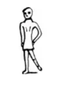

Rune Grimoire
Raidho
Modern Relevance
Raidho signifies swift movement, travel, or sudden change. Originally meaning "riding," it suggests that approaching shifts will occur quickly. Raidho encourages preparation for a fast-paced journey.
Tree, Element, and Deity
Tree: oak
Element: air
Deity: Ing
Meaning: a vehicle; a journey; action
Names Across Dialects
| Dialect | Word | Meaning |
|---|---|---|
| Proto-Germanic | raidho | Wagon |
| Gothic | raidha | Wagon, ride |
| Old English | rádh | A riding, way |
| Old Norse | reidh | Riding, chariot |
| Icelandic | Reið | Riding |
| Norwegian | Reid, Reidr | Riding, chariot |
Phonetic value: r
Esoteric interpretation: the solar wagon, and the chariot of Thor
Ideographic interpretation: a wheel under the chariot, viewed as half of the solar wheel (see Sowilo)
Cosmological Lore
Raidho is the cosmic law of right and archetypal order in the multiverse. This principle is expressed through natural phenomena such as the daily path of the sun and the cycles of nature and humanity. The R-rune is the mystery of divine law, manifest in both the multiverse and in humanity.
Raidho came to be a symbol for Ásatrú, the ancient form of Germanic religion. In ancient times, the external, self-conscious order of religion was much less fixed because the internal, unconscious, and instinctual order of holiness was still intact. This internal order found expression in institutions that blended religion, magick, and law into a unified whole. Today the R-rune symbolizes the "way back to right" through conscious efforts to recover the essence of the primal order.
This rune represents the right order of the initiate's journey through the paths of the Nine Worlds of Yggdrasill. Good advice and judgment according to right are ascribed to Raidho.
Ritual and Right Ordering
Another important aspect of the R-rune is ritual: the arrangement of energy and actions according to cosmic order for a specific purpose. The emphasis is on the right ordering of these energies. Raidho is the channeling of force according to natural laws along the right road leading to the right result. It describes a certain aspect necessary to the working of cause and effect (see also Perthro).
Rhythm, Dance, and Spiral Development
The concepts of rhythm and dance are central to Raidho. This rhythm is embodied in all the worlds of the multiverse. Through rhythmic action and ritual dance, the vitki may perceive and blend with personal rhythm, and in turn become one with the world rhythm and dance.
Raidho also expresses the concept of spiral development. In accordance with the traditional ideology of the cycles of existence, the path moves ever in circles but always rises (or sinks) toward a goal. Reaching this goal is not an end but a transformation and new beginning for another outward expansion.
In popular tradition, the R-rune is a symbol for the Vehmic Court, a sign of deep indigenous religious laws of the folk having precedence over civil authority.
Rune Character
Rune of travel, journeys, and physical endurance. Used as a charm for travelers, including astral travel, and Reidh acts as a guide for the dead in their journey through the underworld. Also a rune of relocation, such as moving house. Reidh means seeking and striving: a quest and stepping into the unknown.
Reidh is a solar rune, symbolizing the chariot of Amon Ra, the Egyptian Sun God, and represents the eightfold cycle of the Greater Sabbats. A rune of rhythm and music, Reidh makes one aware of the natural rhythms in life and helps one to better organize their time. This rune represents justice and the essence of the law, while Tyr is the letter of the law.
Keywords
- Right action and order
- Cosmic cyclical law
- Religion and magick
- Ritual
- Rhythm
- Journey
Galdr
raidho raidho raidho
ru ra ri re ro
rudh radh ridh redh rodh
or er ir ar ur
Stadha
Stand straight with the left arm bent at the elbow, palm on the hip bone. The left leg should be slanted out, lifted off the ground. The right arm stays tightly at the side. Face south.

Magickal Workings
- Strengthens ritual abilities and experience
- Access to "inner advice"
- Raises consciousness to right and natural processes
- Blending with personal and world rhythms
- Obtaining justice according to right
- Assists in astral travel
- Can be used in ritual to give power to movement: drumming, dancing, clapping
Constructive Applications
A charm for travelers and a guide for the dead. Assists in astral travel and relocation. Makes one aware of the natural rhythms in life and helps organize time. Represents justice and the essence of the law.
Baneful Applications
When the energies are directed at another, it will make them restless and dissatisfied. Creates changes in the life for good or ill depending on the other runes used in the working.
Stadhagaldr Rites
Increase in Creative Force
Raidho guides the vitki along the right road:
On the right road I wander.
See Stadhagaldr (Posture Magick) for the full rite.